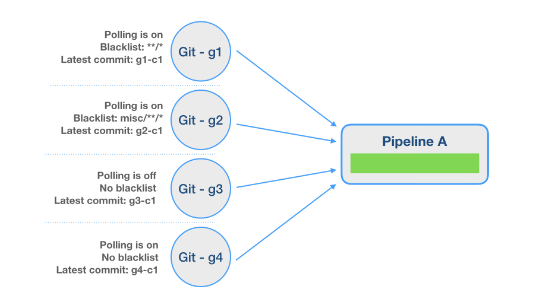

In this series called CD Hacks, we introduce some quick and easy ways to get things done in GoCD. In this post, we’re going to cover how to use materials in GoCD.
A material is the 'cause' for a deployment pipeline to run. In most cases, it is a source code material repository (like Git, SVN, Mercurial, etc). A CD server continuously polls the configured materials and when a new change or commit is found, the corresponding pipelines are run or "triggered". A pipeline can even be configured with multiple materials.
The best way to control what changes get polled, and eventually trigger your pipeline, is by using the blacklisting/whitelisting feature for materials.
What is material blacklisting/whitelisting?
The blacklisting feature for materials in GoCD allows users to specify a file or a set of files for GoCD to ignore when it polls for new changes. The advantage of this is that repository changesets which contain blacklisted file/s will not trigger a pipeline automatically.
Sometimes, instead of ignoring files, you want to trigger a pipeline only for specific files or folder/s. GoCD allows you to invert the blacklisting feature to whitelist and poll only for changes to specific files
How does it work?
Let’s say you have a pipeline which has four different git materials.
Git - g1 : poll for new changes enabled and everything is blacklisted.
Git - g2 : poll for new changes enabled and files under misc folder is blacklisted.
Git - g3 : poll for new changes disabled with no blacklisting.
Git - g4 : poll for new changes enabled with no blacklisting.

Here’s a breakdown of how your pipeline behaves when there are commits made to the source code materials.
At 10:00 AM: Commit g1-c2 happens on g1. Result: Pipeline does not trigger, because the material is fully blacklisted. But, the server sees that commit and will change its latest known commit to g1-c2.
At 10:05 AM: Commit g2-c2 happens on g2. All changes in the commit affect only misc/abc/README.txt and misc/def/hello.txt
Result: Pipeline does not trigger, because path misc/*/ is blacklisted. But, the server sees that commit and will change its latest known commit to g2-c2.
At time 10:10 AM: Commit g3-c2 happens on g3.
Result: Pipeline does not trigger, because polling is turned off (and the server does not see that commit at all).
At time 10:15 AM: Commit g4-c2 happens on g4.
Result: Pipeline triggers - with g1-c2, g2-c2, g3-c1 and g4-c2. Since polling is turned off, g3-c2 has not been seen.
At time 10:20 AM: Commit g2-c3 happens on g2. Changes in the commit affect misc/abc/README.txt and src/test.rb
Result: Pipeline triggers - with g1-c2, g2-c3, g3-c1 and g4-c2. This is because src/test.rb does not match the blacklist misc/*/.
At time 10:25 AM: Pipeline is manually forced (click on "Play" button)
Result: Pipeline triggers - with g1-c2, g2-c3, g3-c2 and g4-c2. A manual trigger will forcibly update every material it knows of to the latest revision and triggers the pipeline.
In order to perform whitelisting, you choose “Invert the file filter, e.g. a blacklist becomes a whitelist instead.” option as shown below.

Server-side Material Blacklisting vs Fetch Materials
In blacklisting, all of the decisions about which materials to use for a pipeline trigger are configured on the GoCD server side and gives advantage to skip a pipeline trigger for set of files and folder.
The "Fetch Materials" option, on the other hand, affects only the Agent side. It's an option which allows the agent to not fetch / checkout / clone the materials at all, when run. By this time, the server has already decided which materials to use. The agent cannot control it.

When Fetch Material is set to False.
<stage name="stagename" fetchMaterials="false">
“Fetch materials” option should be turned off only in cases where you don't care about the material at all. In some cases, you just want a timer trigger for a pipeline - and don't care about the revision of the checked out material - or you want to check out the material yourself for some reason. Then, you'd turn off "Fetch materials".
We believe incorporating the GoCD material blacklisting/whitelisting feature would help avoid undesirable pipeline builds and help save time.
You can visit help documentation to understand more about the material blacklisting/whitelisting feature.